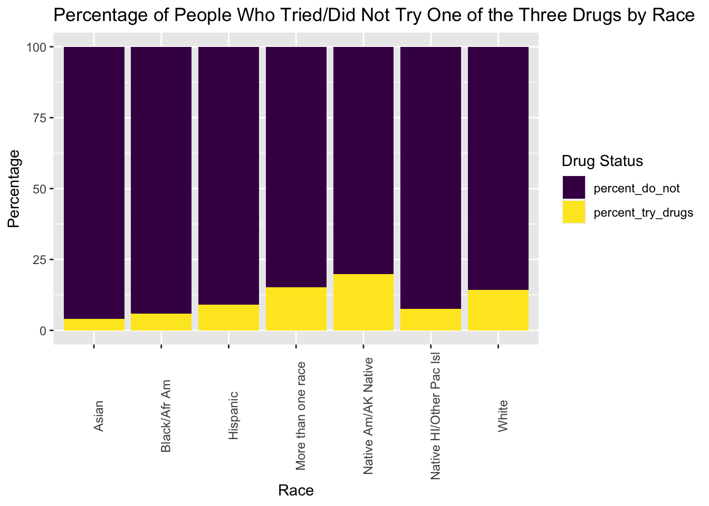
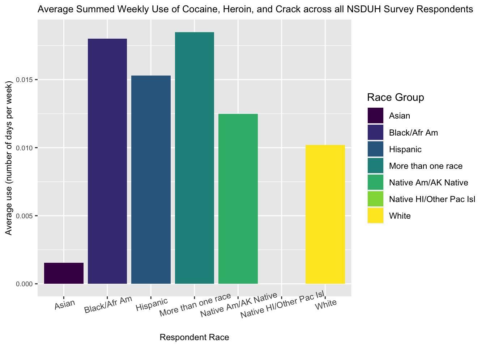

Drug Use Exposed!
Unveiling the Factors of Influences for People to Try and Use Drugs
The Surprising Connections: Various Factors that Drive Drug Use Trends in the US!
Debunking Myths: Race, Income, and Drug Use Dynamics
There are many stereotypes about the relationships between race, annual income, location and age for drug use. What underlies common perceptions linking race, income, and drug use? With this study, we have explored connections and factors towards drug use and will tell you everything you need to know about how race, income, location and age actually influence drug use across the US. The results of our study are based on the National Survey on Drug Use and Health which was conducted in 2021. This survey asked people to report on their drug use, including information about the age when they first used a substance, how often they use it, and how likely they are to use it again in the future. The survey also collected information about the survey taker’s race, income, and location based on county size of where they are located.
The survey data is very comprehensive, but to focus on the results of our study, we have only looked at factors influencing the use of three substances: heroin, cocaine, and crack. Stereotypes often heard about these substances would be, for example: people with higher yearly incomes tend to use more cocaine, and people with lower yearly incomes would be more prone to using heroin or crack. We wanted to validate and potentially debunk these stereotypes via statistical models and tests that would test the data-based relationships between drug use, race, and income. For more details on those tests and models, please see the Analysis tab of our website.
Drug Exploration: Heroin, Cocaine, and Crack
After we had conducted our analysis, we found that there is a clear relationship between race and drug use. Some noteable things to notice first are people who tried drugs and did not based on their race.
The bar chart indicates varying drug usage patterns among ethnic groups, with Native Americans/Alaska Natives having the highest percentage of people who have tried drugs, while Asians show the lowest. We can see such a huge differences between many of these race groups which is super important in finding variables that can be contributing to such differences. Although for all the race groups the majority have never tried one of these three drugs, its important to explore the reason the others have tried such drugs and what could be causing people to try them. Could this be attributed to income differences or where someone might live? Well the answers might surprise you!

To provide context for the average frequencies of the summer use of cocaine, crack, and heroin across the racial groups we have studied, we made a bar chart that shows the average number of days per week each group used any of the three drugs of interest. From this plot, we found that the Non-Hispanic Black/African American group used these drugs the most frequently, while the Non-Hispanic Native Hawaiian/Pacific Islander group used them the least. This plot is a good basis for what we will expand on further in our data analysis since it gives us the preliminary knowledge of which race groups are using the most drugs on average, and which are using the least. This sets up the relationship between race and drug use that we are interested in investigating with this study.
Income and Drug Use
The intersection of race and income revealed some unexpected trends in the propensity for drug use. The commonly held belief that higher-income individuals are more likely to indulge in drug use, particularly with expensive drugs like cocaine, was partly substantiated. However, this trend was not uniform across all racial groups. Lower-income individuals across most racial groups exhibited a higher likelihood of drug use, contradicting the notion that drug use is a luxury afforded only by the wealthy. For instance, among higher-income brackets, White and Asian populations showed a relatively lower frequency of drug use compared to their Black and Hispanic counterparts. This divergence suggests that income alone does not dictate drug use patterns; cultural, social, and possibly even genetic factors play significant roles.
We also found that there are relationships between income and drug use. Generally speaking, drugs, especially heroin or cocaine, are extremely expensive. So income is one of the important predictors that we need to consider. This perception may suggest that individuals with higher incomes could have more access to such substances due to their ability to afford them. Since the dependent variable that we apply (drug use), which outcome is binary, we utilized the logistic regression model for analyzing. By including and combining the ‘NEWRACE2’ and ‘income’, we were able to explore how these variables together can influence the drug use pattern. From the output table, the ‘Asian’ racial tends to have a lower odds of drug use while the native American is the highest. However, there are some interesting findings of the income levels. The data of the odds ratio indicates that with lower income levels showing a higher drug use. This is an unexpected result from the perceptions. In this case, the factors like socio-economic or psychological are what we need to consider. Isn’t that interesting? It is important to explore income and its effect on drug use because it gives more insight into how income problems or surplus in income can lead to a person’s decision in picking up serious drugs such as cocaine, crack and heroine.
Location and Drug Use
We were also interested in the relationship between location and drug use. We wanted to address the stereotypes that involve substance use and location. There are stereotypes such as “people in large cities/metropolitan areas tend to use more drugs like cocaine than people in rural counties”. We found that this is a claim that the NSDUH data supports. We found that more people use, on average, cocaine more days per week in large metro areas than those in small metro and non-metro areas. It was also found that more race categories use cocaine in a week in those large metro areas than those in non-large metro areas, with the Black/African American race category having the highest median number of days per week of use across all three metro classifications.
This could be due to the fact it might be easier in large metro areas to get a hold on these very dangerous drugs. There are many possibilities that could be explored as to why this relationship is evident but having these relationships shown by data is quite extraordinary.
Interpretations
We found some interesting trends between age and drug use as well. We have shown that on average, people try crack at a younger age then they try heroin. This could be due to a variety of factors, and interesting follow-up studies could involve access to those drugs and a survey of the average interest of people of a variety of ages in either drug. We would hypothesize that there is higher accessibility of crack to younger people, but that it is more difficult to acquire heroin.
Our analysis of the 2021 National Survey on Drug Use and Health has presented a nuanced understanding of the intricate web of factors influencing the use of cocaine, crack, and heroin in the United States. By exploring the variables in this survey, we have offered insights that could guide effective policy and intervention strategies. To address issues with drug use, we need to know more about why they are tried in the first place. By sorting through the variables in the survey, it has become evident that drug use is not a monolithic issue but a complex interplay of race, income, location, and age. This understanding is crucial for developing targeted and effective approaches to address the challenges of drug abuse in various communities. Our study serves as a stepping stone for further research and discussion, aiming to contribute meaningfully to the ongoing efforts to combat substance abuse.